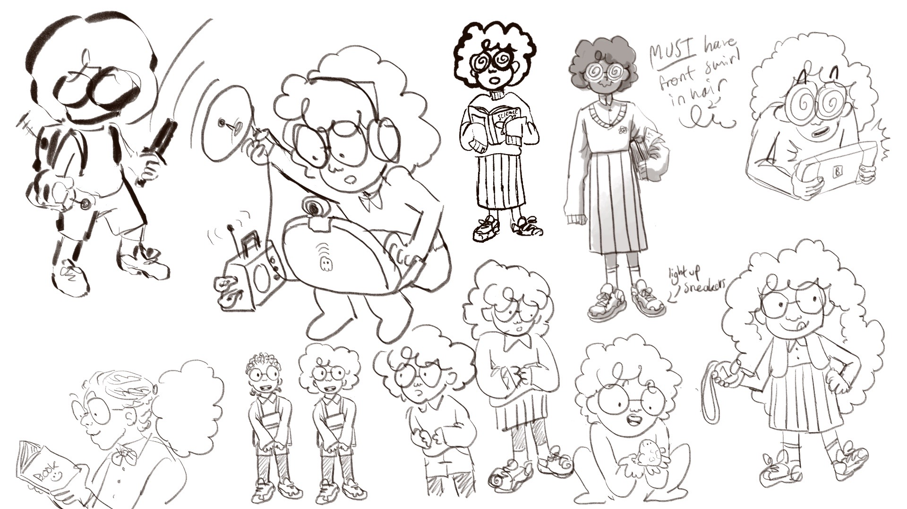
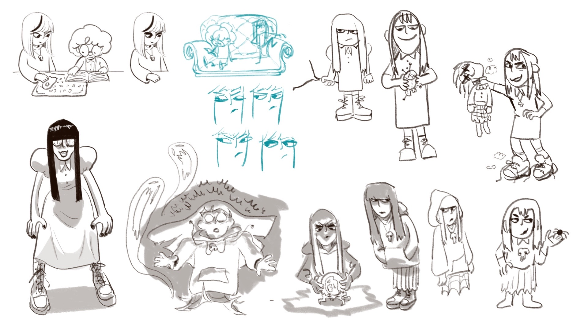
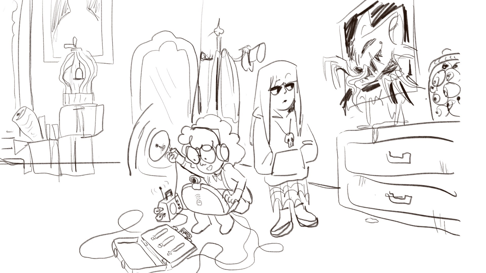
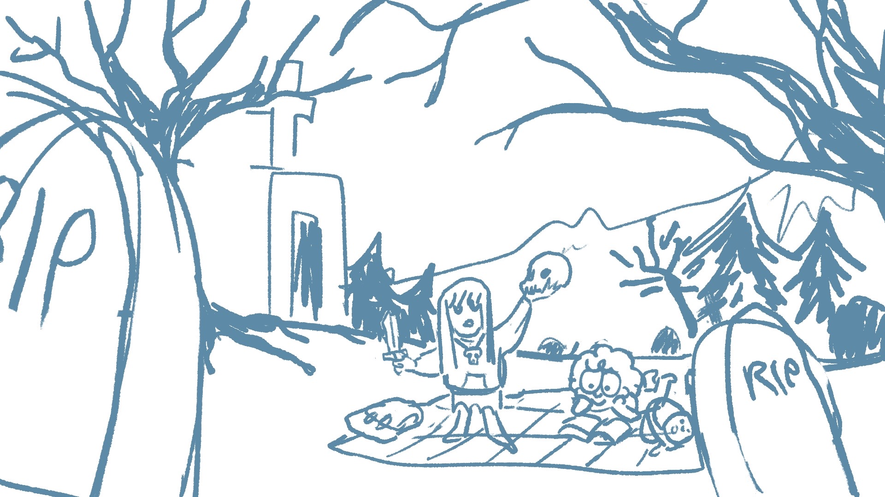
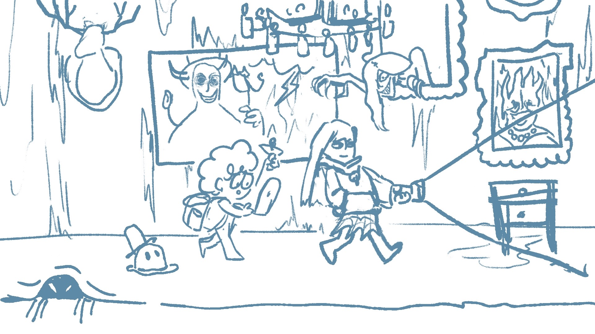
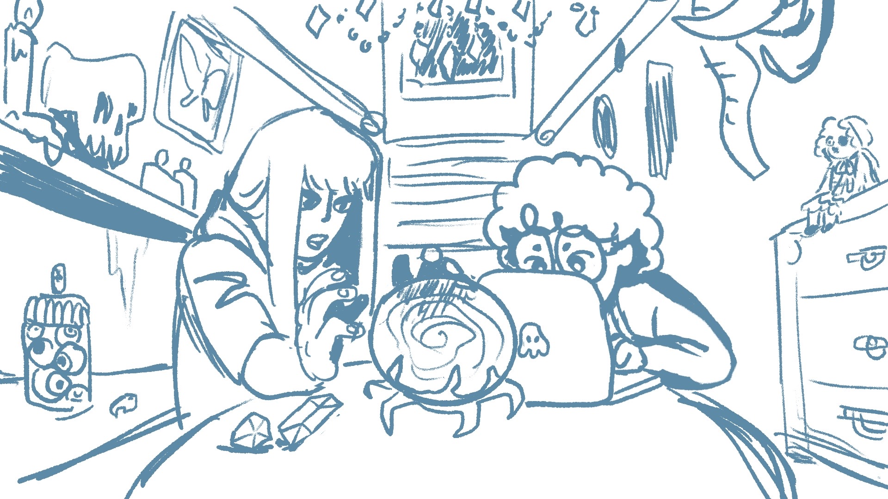

Amiria and Ena are two ghost-hunting best friends. While most 12 year olds are at the mall, these two explore haunted houses and spooky graveyards! Amiria is a science geek who wants to prove ghosts are real, while Ena is the town’s resident goth who loves all things occult. Together, they combine tech and magic to investigate the paranormal.